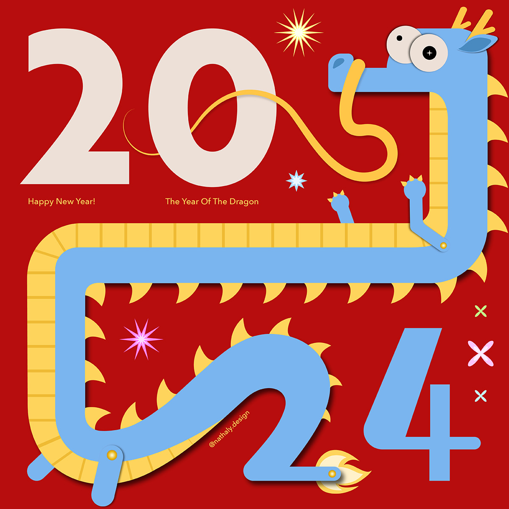
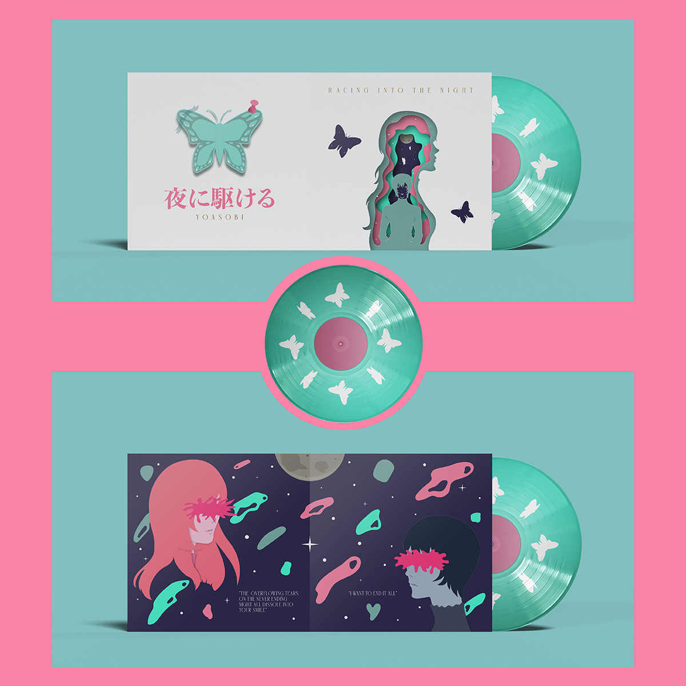
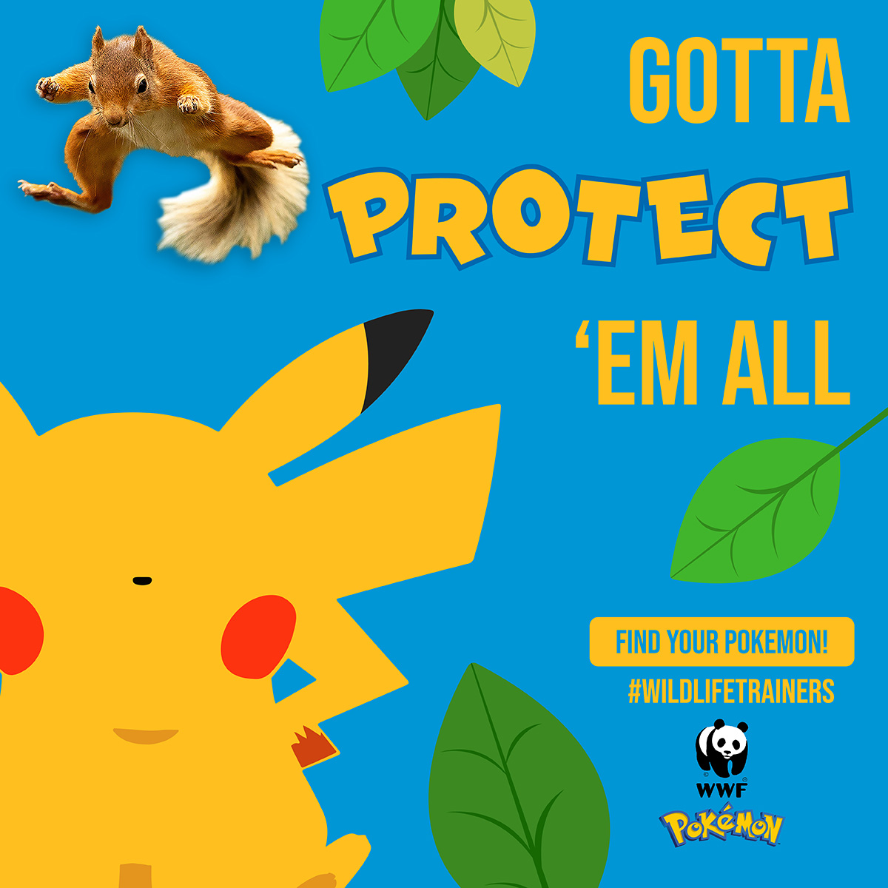

Welcome to my creative space, where I showcase all of my best work and the thought process behind them ☻
Hi, I'm Nathaly! I'm a creative who focuses on Branding, Packaging, advertising, and Illustration. I
love learning on the go and open to new experiences. You can learn more about me and my work here, as well as download my resume
if you're interested in my skills and experience. If you enjoy what you see Contact Me! Let's collaborate together and make history.
View all of my most recent and best work!
Works
24' Dragon Vector Art

24' Dragon Vector Art is a personal work I developed on my own.
The purpose behind was to celebrate the new year, while doing some research I
discovered 2024 would be the year of the dragon in the chinese lunar calendar. So
as to represent both special occasions, I came up with the idea of integrating a
dragon into my work and combine its body with the number 24.

Vinyl Cover Design is a cover design developed based on the song of my choice Racing into the night by Yoasobi.
Gathering teenagers and young adults who enjoy foreign music and things with greater meaning and/or significance. As well as to
challenge visual appeals and consider characters and their actions critically. By using illustration as a vital component to
showcase both sides of the song through color, illustration, and typography.
WWF Campaign

WWF campaign was built around WWF's values and branding elements to raise awareness about endangered species, with
the target audience being kids, I worked to develop ideas and collaborations that would attarct both kids and parents attentions.
Therefore, I chose to team up with pokémon in order to raise awareness and bring that curiousity and joy kids get from watching and
learning about their favorite pokémon!
{kind=link}